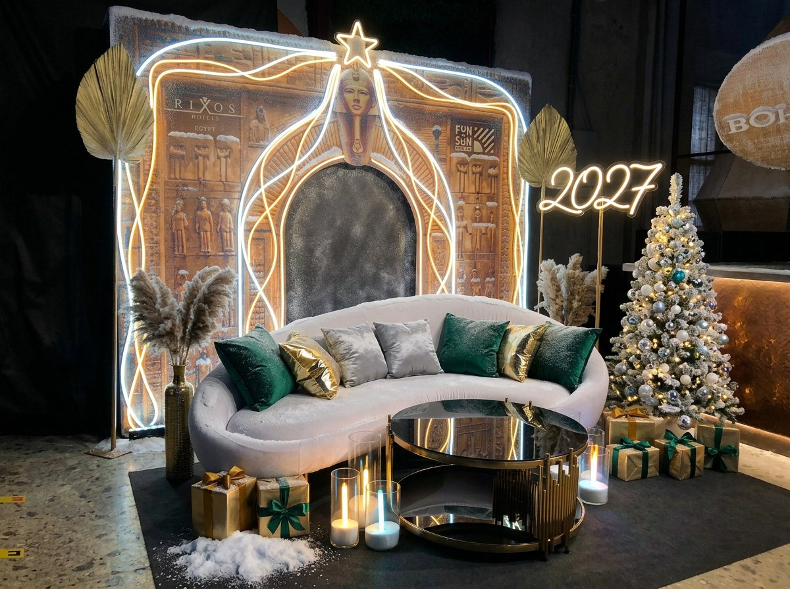
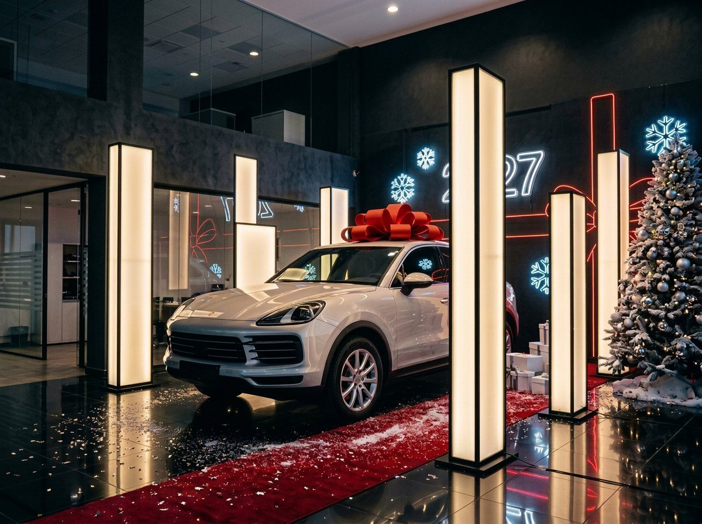
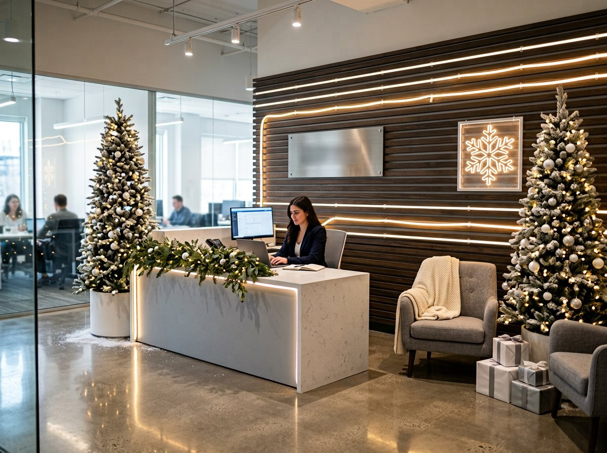
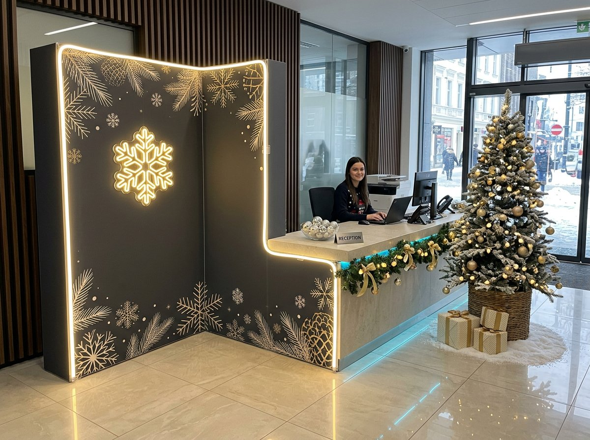

Четыре серии: рестайлинг наших реализованных фотозон в праздничном декоре и концепт новогоднего оформления автосалона по зонам.
↓ Скачать архив: 4 фотозоны (до / после, JPG + описание) ↓ Скачать с этой страницы zip · 2,3 МБ · 4 визуализации + 4 исходника + README · если превью не открылось, скачайте по первой ссылке

серия 01 · 5 фотозон
Реальные конструкции SM Production, передекорированные в Новый год: гибкий неон по контурам, иней, ели в гирляндах. Со шторкой сравнения.

серия 02 · 5 зон
Фасад, подиум с автомобилем, зона выдачи, лаунж и фотозона — единая зимняя система с неоновыми акцентами и ориентирами по бюджету.

серия 03 · 5 зон
Ресепшн, коридор у лифтов, кофе-поинт, фотозона в опенспейсе и корпоратив: неон на клипсах, световые короба, акрил с печатью. Монтаж за ночь, без сверления стен.

серия 04 · 5 сцен
Welcome-зона, переговорная, опенспейс, угловая форма на ресепшн и брус-колонны: скрытый каркас, запечатанный торец, гибкий неон по кромкам.